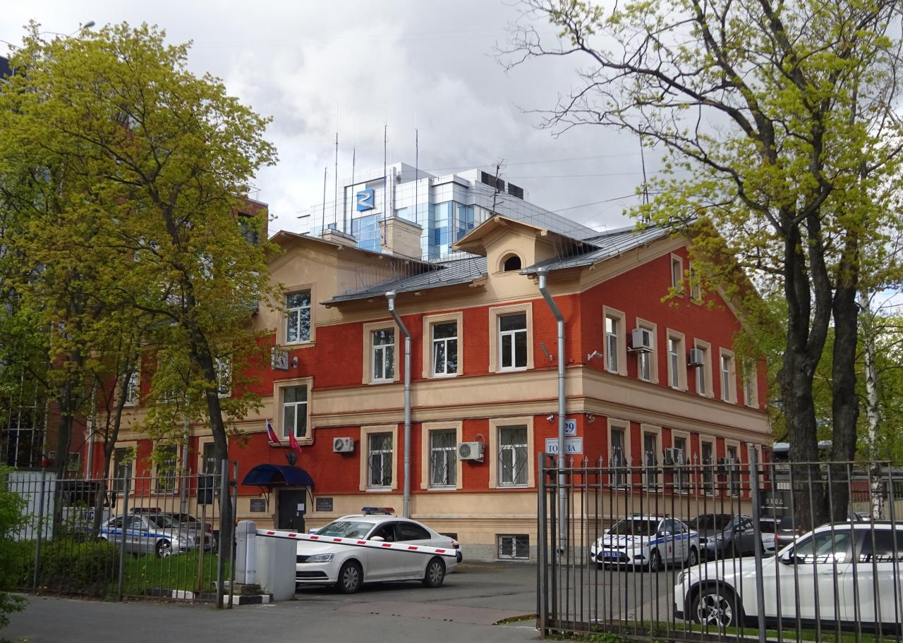

Когда-то здесь жил Нестор Никифорович Кайгородов — брат Дмитрия Никифоровича Кайгородова, которого называют отцом русской фенологии.
Брат Дмитрия Никифоровича Кайгородова, автора многочисленных трудов, учебных пособий, книг о природе, статей и сказок, известен гораздо меньше.
Однако он тоже был примечательным человеком. В свое время он был известен как председатель Общества пособления ученикам Лесновских женских гимназий принца Ольденбургского и Лесновского земского попечительства по призрению семей, призванных на действительную военную службу.